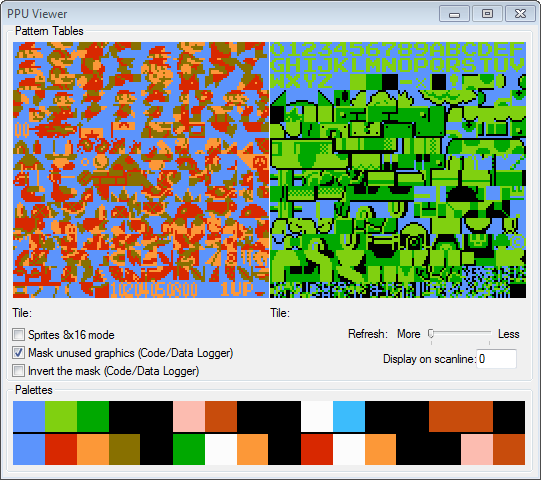
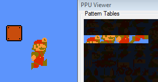

Содержание
Центральный процессор общается с видеопроцессором (PPU) при помощи регистров. В регистры передается старший и младший байты для чтения/записи байтов видеопамяти, позиция скроллинга, включение/отключение графики и прочее.
Графика NES состоит из тайлов. Тайл - изображение размером 8x8 пикселей.

Часть графики предназначена для фона, а часть для спрайтов (изображений поверх фона).
Игра комбинирует различные тайлы, располагает их на экране в нужном месте, и в итоге получается привычная нам картинка. Например, для анимации прыжка Марио используются 8 тайлов, которые выводятся на экране как спрайты.

Если игре понадобятся новые наборы тайлов, например для отображения логотипа, алфавита, новых видов врагов и так далее, она может подключить в видеопамять другую область с тайлами вместо одной из текущих, или же вручную перерисовать некоторые тайлы на другие.
Как и в случае с банками PRG, возможность, метод переключения банков CHR и их размер зависят от маппера.
Для фона и для спрайтов выделено по 4 набора цветов, в каждом наборе по 3 уникальных цвета + 1 цвет фона.
Память спрайтов содержит информацию о том, какой номер палитры будет использован каждым отдельным спрайтом. Фон указывает палитру для своих тайлов сразу для размера 32x32 пикселя.
Для редактирования тайлов обычно используются универсальные тайловые редакторы вроде YY-CHR. Менять палитру не составляет труда. С редактированием титульных экранов иногда нужно повозиться.
Для некоторых популярных игр существуют специализированные редакторы, позволяющие не только менять графику, но также конструировать уровни, изменять расположение врагов и прочее.